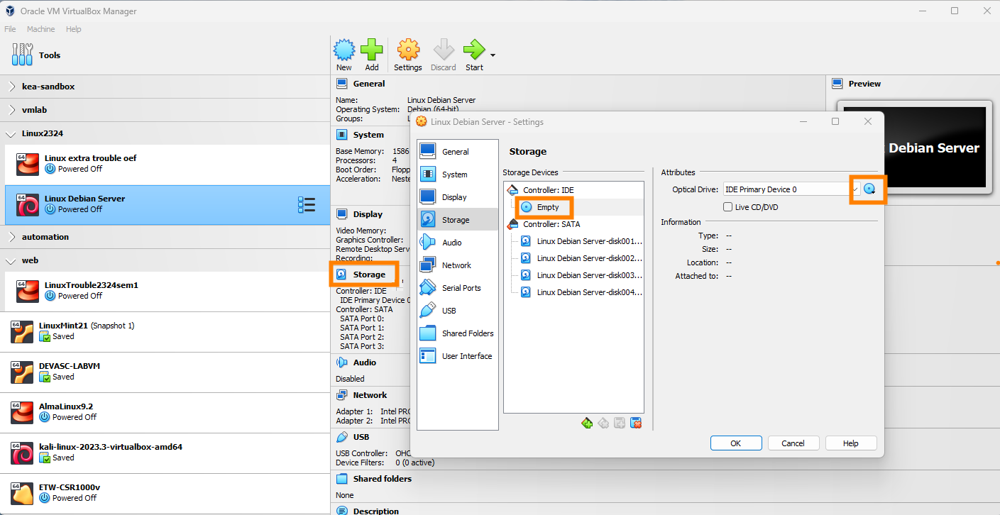

11.2. Linux installatie: expert-modus
Linux
HOGENT toegepaste informatica
Thomas Parmentier, Andy Van Maele, Bert Van
Vreckem
2023-2024
OS-installatie op servers
Hoe installeer je hier een OS op?
 HP Proliant
HP Proliant
Labo-VM representatief voor server-HW
Leerpad 11.4, Downloadknop helemaal onderaan
- 1.5GB RAM
- 2 NICs (NAT, intnet)
- 4HDDs:
- 1x 8GB (zoals flash-geheugen of SSD op server)
- 3x 128GB (zoals HDDs op server)
Debian Netinstall
- Download Debian Netinstall ISO
- Selecteer als “Optical drive” in VM

Partitioneringsplan
- “sda” is de 8GB schijf
/boot-partitie- swap-partitie
- “sdb”, “sdc”, “sdd” zijn de 128GB schijven
/ partitie: RAID-10- `/var/www/html``: RAID-5
Expert installatie
- In GRUB-menu, kies “Advanced options” > “Expert install”
- Volg de instructies in het labo! Leerpad, stap 11.4